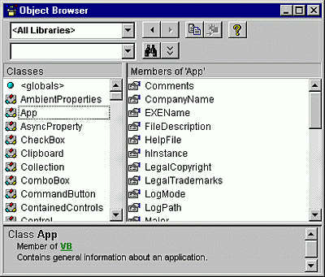
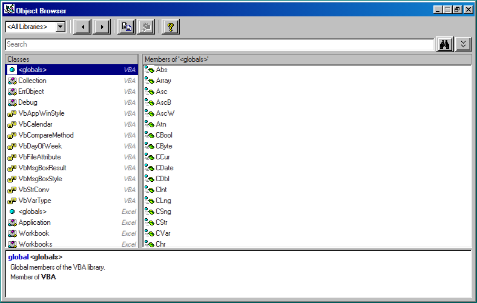
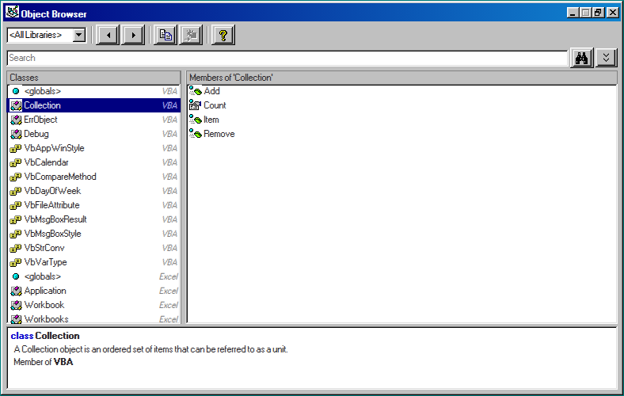
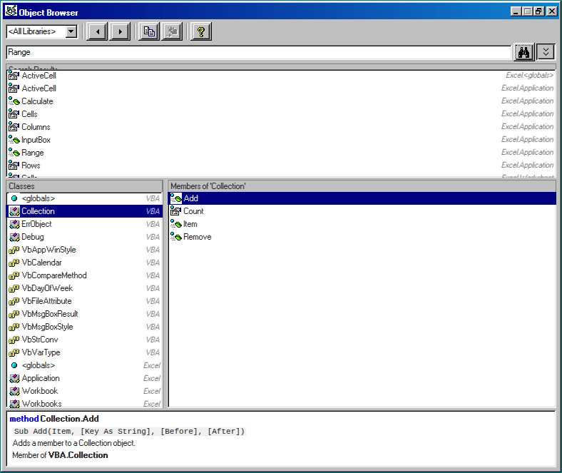

A number of years ago I found a UI lib called 98.css with the tag line "A design system for building faithful recreations of old UIs." I've been wanting a reason to use this in some app and thought this might be a good use case.
What is the Object Browser?
A dialog box in which you can examine the contents of an object library to get information about the objects provided.
Displays the classes, properties, methods, events, and constants available from object libraries and the procedures in your project. Use it to find and use objects you create, as well as objects from other applications.
You can get Help for the Object Browser by searching for Object Browser in Help.
An original screenshot of the Object Browser.

The list of Libraries comes from the MS Learn Office VBA Reference
- VBA
- Excel
- Office
- Word
- PowerPoint
- Access
- Outlook
- Scripting
- ADODB
I thought why not use this type of project as a way to try out Copilot so I asked the following:
Build the VBA Object Browser as a website.
I then raised a new Issue and assigned Copilot to see what they would add:
Use the following links as a reference:
Use the Object Browser
Object Browser
https://learn.microsoft.com/en-us/office/vba/language/reference/user-interface-help/object-browser
Code window and Object Browser icons
With the following prompts:
are there any missing classes/methods?
VBA <globals> — 27 new methods: AppActivate, Beep, CallByName, ChDir, ChDrive, CVErr, DeleteSetting, FileCopy, FileDateTime, FileLen, FreeFile, GetAllSettings, GetAttr, GetSetting, InputBox, Kill, MkDir, Partition, QBColor, Randomize, RmDir, SaveSetting, SendKeys, SetAttr, Shell, Spc, Tab
VBA enums — 2 new: VbFirstWeekOfYear (was already referenced in the DateDiff/DatePart signatures but the enum itself was absent), VbTriState
Excel <globals> — 4 added: ActiveChart, Charts, Names, Sheets
Excel existing classes — missing members added to Application (+7: ActiveChart, Charts, GetOpenFilename, GetSaveAsFilename, OnTime, Run, Wait), Workbook (+6: ActiveChart, Charts, Names, PrintOut, Protect, Unprotect), Worksheet (+7: Calculate, ChartObjects, ListObjects, PageSetup, PrintOut, Protect, Shapes), Range (+11: Activate, Borders, Calculate, FillDown/Left/Right/Up, NumberFormatLocal, Select, Text, WrapText)
New Excel classes — Chart, Name, PivotTable, ListObject
can you implement all classes/methods etc from all Office programs
Word (19 classes, 218 members): Application, Document, Documents, Selection, Range, Paragraph, Table, Find, Bookmark, and enums WdParagraphAlignment, WdSaveFormat, WdSaveOptions, WdUnits, WdCollapseDirection, WdMovementType, WdSelectionType, WdProtectionType, WdFindWrap
PowerPoint (11 classes, 122 members): Application, Presentation, Presentations, Slide, Slides, Shape, TextFrame, TextRange, and enums PpSlideLayout, PpSaveAsFileType
add Access, Outlook, Scripting (FileSystemObject), and ADODB
With the following responses:
Access (9 classes, 106 members): Application, DoCmd (30 actions: OpenForm, OpenReport, RunSQL, TransferSpreadsheet, SendObject, etc.), Form, Report + enums AcFormView, AcObjectType, AcRecord, AcQuitOption
Outlook (11 classes, 114 members): Application, NameSpace, MailItem (22 members), MAPIFolder, AppointmentItem, ContactItem + enums OlItemType, OlDefaultFolders, OlImportance, OlSaveAsType
Scripting (9 classes, 98 members): FileSystemObject (24 members: CopyFile, DeleteFolder, OpenTextFile, etc.), TextStream, File, Folder, Drive + enums IOMode, SpecialFolderConst, FileAttribute
ADODB (11 classes, 117 members): Connection, Recordset (38 members: MoveNext, AddNew, Update, GetRows, etc.), Command, Field, Parameter + enums CursorTypeEnum, LockTypeEnum, CommandTypeEnum, ParameterDirectionEnum, ConnectModeEnum
My outputs after accepting the changes from GitHub Copilot:



I thought it might be helpful to have the ? link go to "https://learn.microsoft.com/en-gb/office/vba/api/overview/language-reference then it was updated to use the method etc but I think that needs some work...
Site
I've deployed this via Rick's PC Resale website as it's Access related and linked to 599CD.